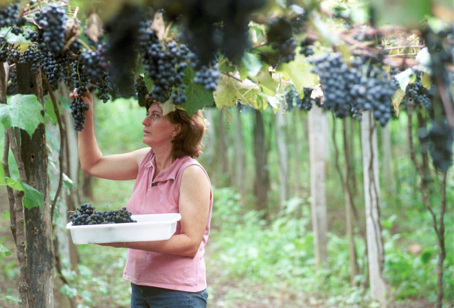
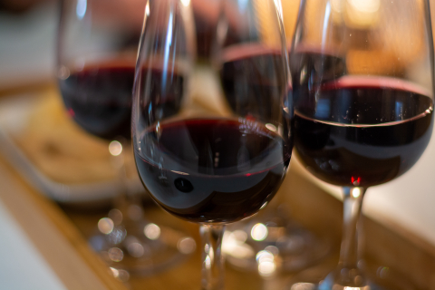
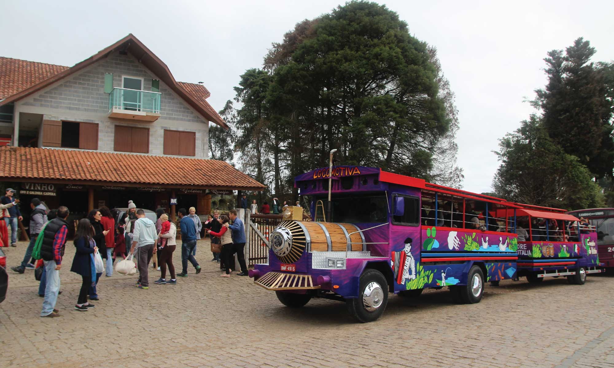

Sobre o Roteiro
O Caminho do Vinho de Colombo é um dos principais circuitos de enoturismo do Paraná, onde visitantes podem conhecer de perto a produção de vinhos artesanais em propriedades rurais familiares. A tradição vitivinícola na região remonta à colonização italiana no século XIX, mantendo viva a cultura dos imigrantes através de vinhos, queijos e gastronomia típica.
Experiências Imperdíveis
- Degustação de vinhos coloniais e suco de uva integral
- Almoço típico italiano em cantinas rurais
- Compra direto do produtor: vinhos, queijos e embutidos
- Tour pelos parreirais e processo de fabricação
- Paisagens rurais e arquitetura italiana
Como funciona?
O roteiro pode ser feito de forma independente ou com agendamento de visitas guiadas. A maioria das vinícolas abre de quinta a domingo, mas recomenda-se verificar horários específicos.
Galeria


